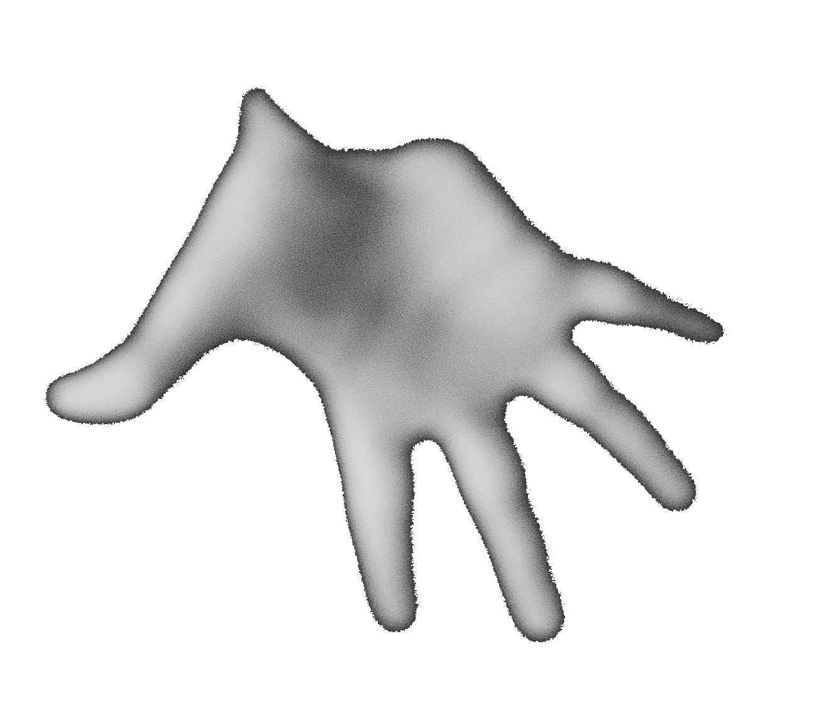

2) My body becomes a document of a place
3) of a sentiment … a touch
4) of waves rippling
5) seagulls squawking

6) of a dream.
1) “I remember a time when my body remembered a dream my mind failed
to remember.”